Five houses, one cost model
Between 2021 and 2025, Thinnoff Investments bought run-down houses in high-value neighbourhoods in and around Harare, rebuilt or renovated them, and sold them: five projects delivered end to end at 35% average ROI. I founded the business and ran every project. These are the sites.
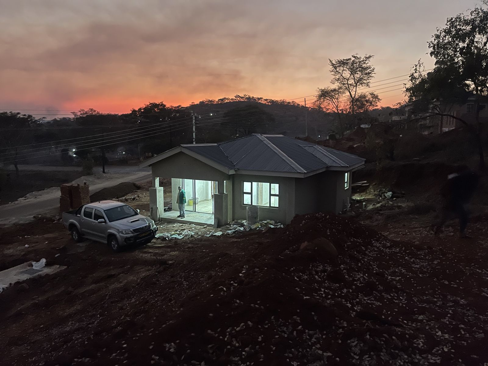
How the model worked
Each cycle followed the same discipline. The acquisition case came first: comparable-sales analysis and a renovation cost estimate tested against hold-cost and resale assumptions before any offer went in. During delivery I directly managed 25 trades personnel across six disciplines (builders, carpenters, interior specialists, plumbers, electricians, painters), each trade with a senior and junior hierarchy, tracking actual against budgeted spend per project in Excel and reconciling the final cost at completion. The selling price was set off reconciled total cost, not off hope. Sales themselves ran on a listing funnel I measured monthly: impressions, enquiries, and days-on-market, timed toward high-demand windows.
One renovation, start to finish
The same property at acquisition, mid-works, and completion.
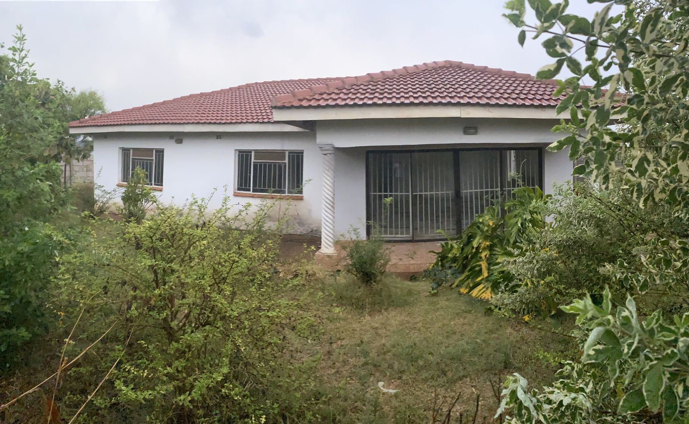
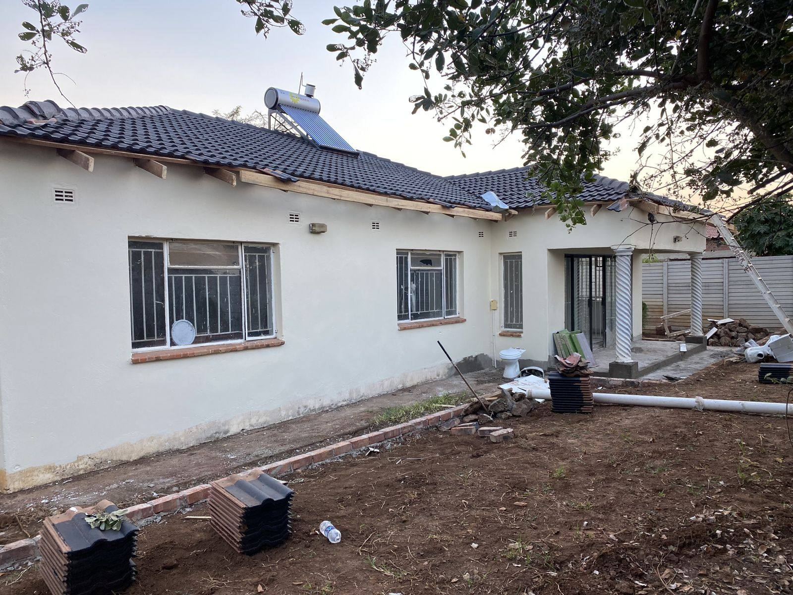
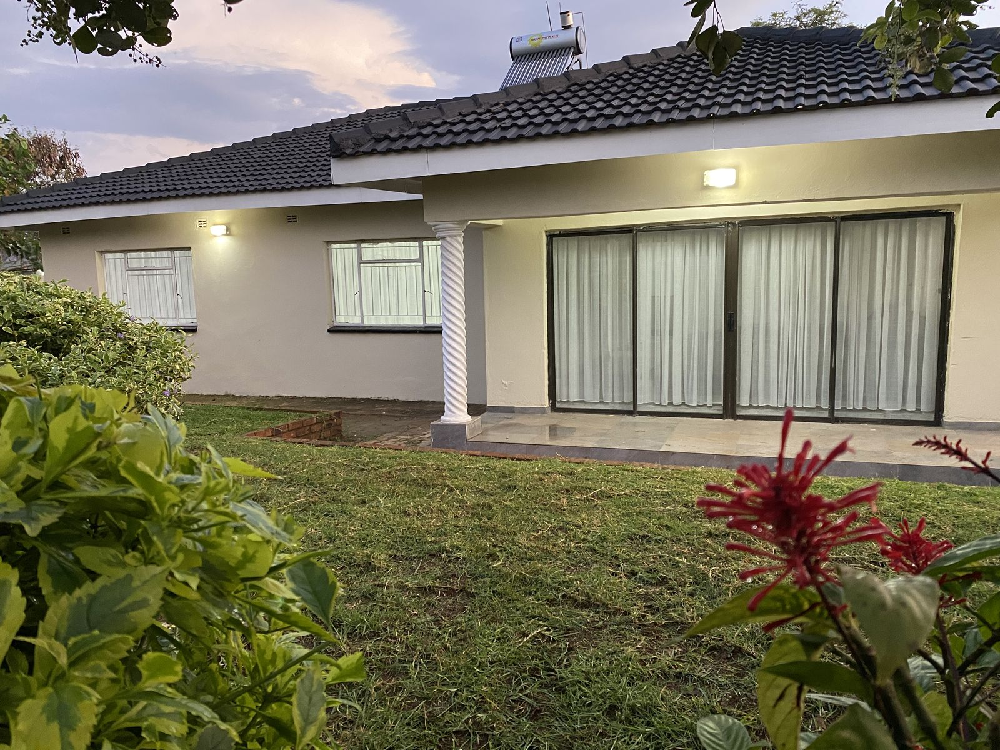
Ground-up delivery
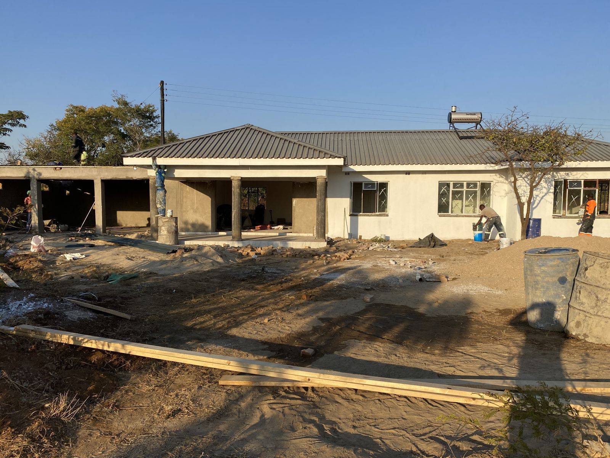
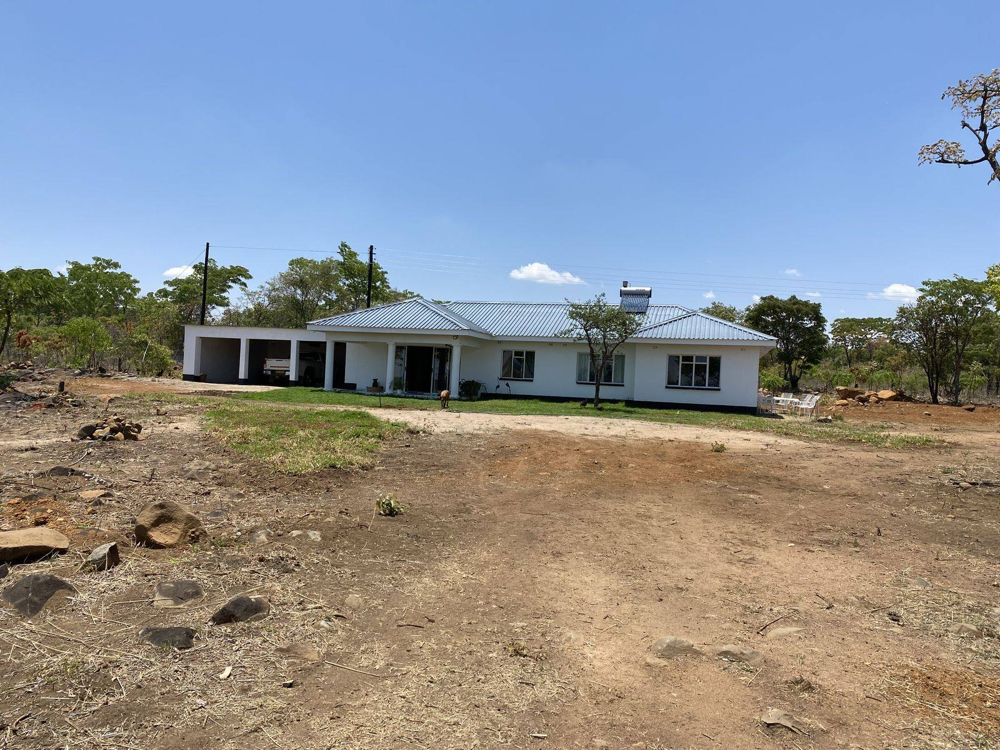
A second renovation: takeover to handover
The same property through the full cycle: as bought, mid-works, and completed.
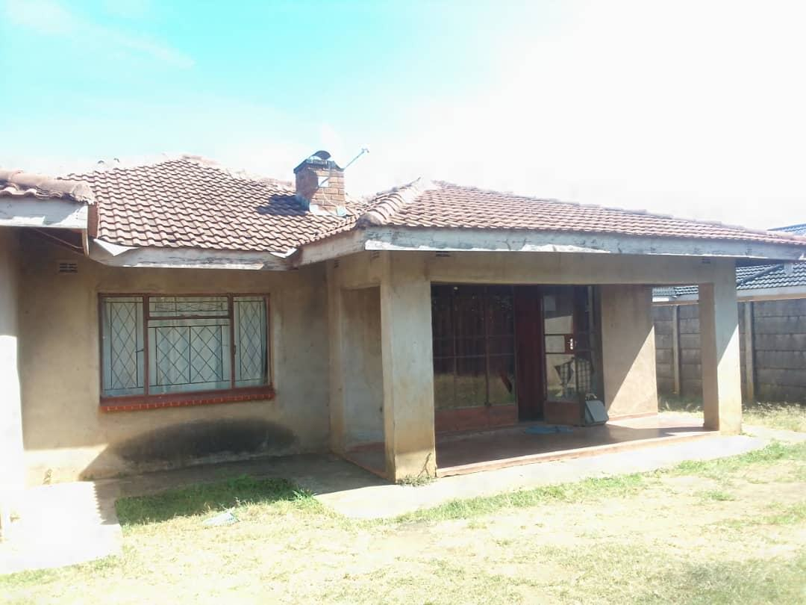
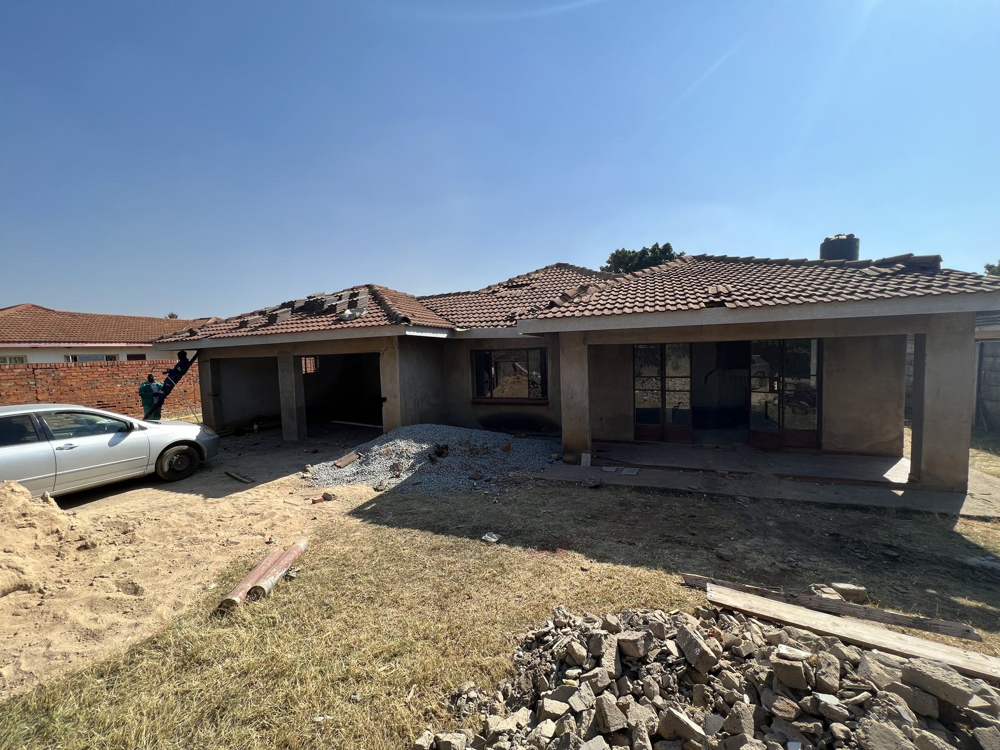
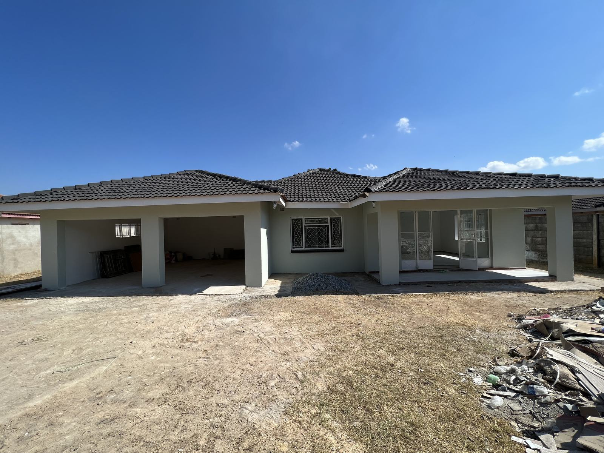
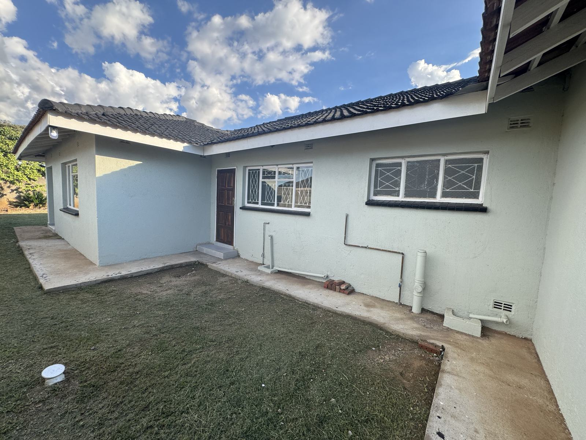
The fifth house: taken back to the walls
The largest scope of the five: an old farmhouse stripped to its walls and rebuilt.
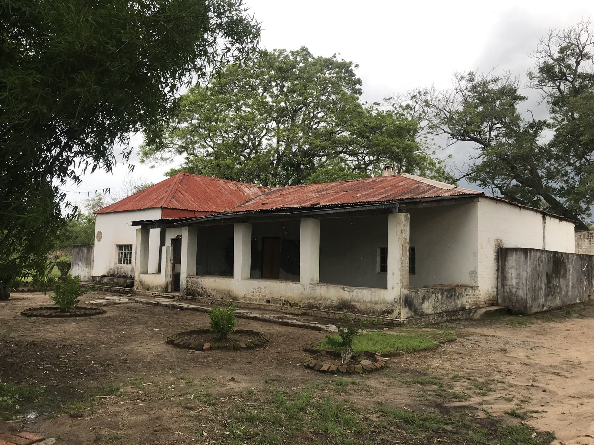
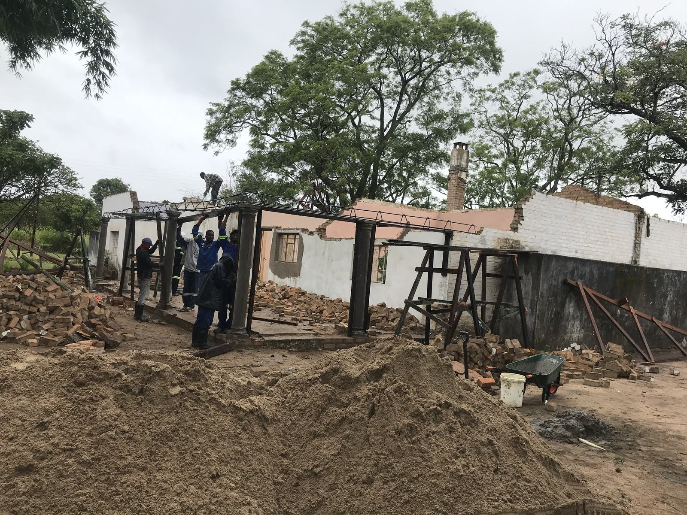
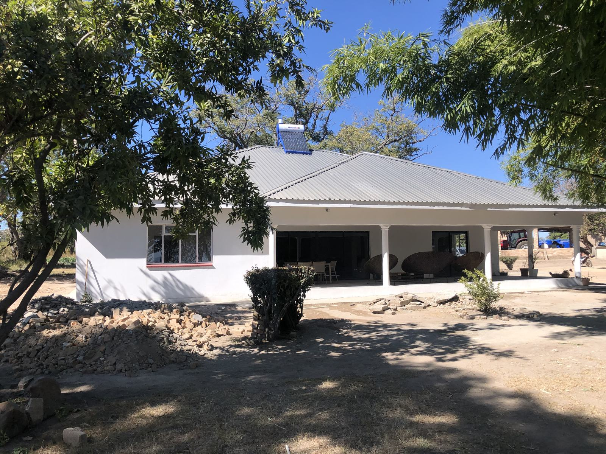
All photographs are from Thinnoff project sites, 2021 to 2025, with location metadata removed. The 35% figure is the average return across the five completed cycles, computed off reconciled project cost.